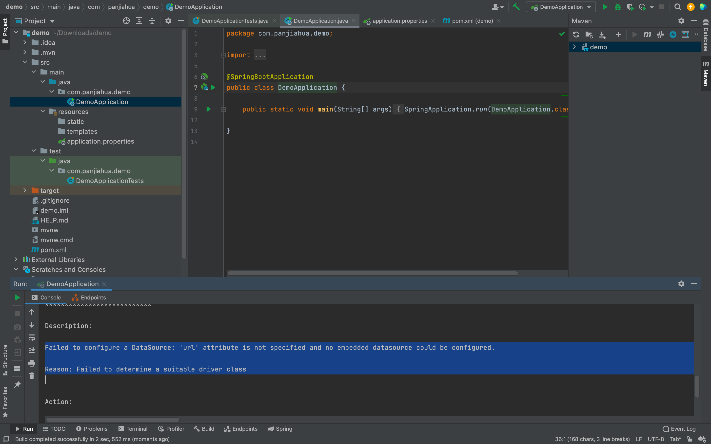
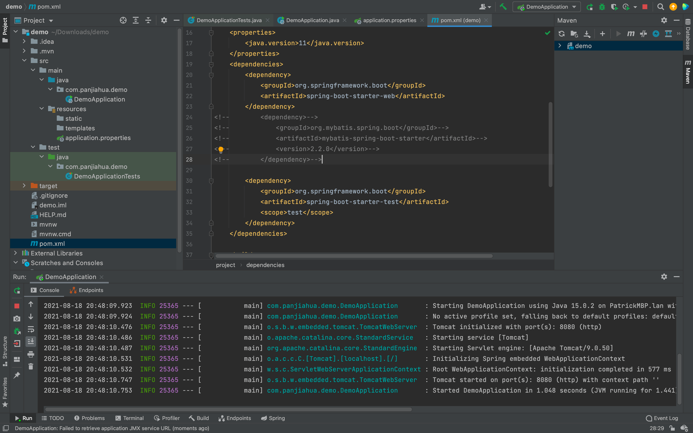
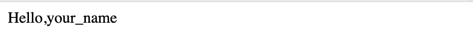

springboot_使用
本节课的学习内容
在这个教程中，我们会带大家intelij来编写一个简单的后端。
准备工作
首先，强烈推荐 IntelliJ。注意，请下载 Ultimate 版，这样才能获得 Spring 的完整支持！下载的同时，请从这里用学校邮箱申请免费使用，白嫖yyds！
~~如果你有生产力需求的话，也可以选择花个1000多买个全家桶~~
SpringBoot该如何配置
使用spring initializer可以简化你配置的步骤
按如下图片进行设置
用Maven架构来管理包，下面group地方就把自己域名反一反写上去，Spring Boot提供了http集成，My Batis是用来连接数据库的，MySQL Driver是用来对数据库中内容进行操作的。
完成后点击generate
会下载一个zip文件，解压后拖动到Intelij IDEAIntelij IDEA中打开，等待它自动下载所需文件
Resource文件夹中的static和templates是有关网页显示的，
此时点aDemoApplication右侧的运行按钮，会报出fail to configure a datasource.我们暂时还没有连接数据库所以会报出这样的错误。

此时注释掉如下几行，并且点击右上方的刷新按钮，maven会自动将mybatis给忽略（mybatis是连接数据库的包）
此时再点击运行，一切正常

观看下方运行信息，发现本服务在8080端口跑，访问http://localhost:8080 ，因为你未在其中添加任何内容，所以出现空白页面错误。
添加如下代码到DemoApplication文件中，点击运行
@RestController 等价于
@GetMapping等价于@RequestMapping(value=“/”,method=RequestMethod.GET),
相当于面对用户发送的面向“/”的get请求，他会返回一个字符串类型，内容是“Hello World”

此时再访问http://localhost:8080，则显示出hello world
如果我们要让localhost:8080/list/这个网站返回一个列表该怎么办呢。大家可以先自己写一写。
再输入以下内容,点击运行
@GetMapping("/list"）等价@RequestMapping(value="/list",method=RequestMethod.GET),
相当于面对用户发送的面向"/list"的get请求，他会返回一个列表类型，内容["Hello","World"]
此时再访问http://localhost:8080/list，则显示出["Hello","World"]
返回其他任何类型的数据也是同理。
若要能随着用户输入信息发生变化时，则要用到@RequestParam来获取用户输入，添加以下代码到DemoApplication，参数中的value就是参数名，defaultValue就是没有输入情况下默认的输入值。
@GetMapping("/hello")
public String Hello(@RequestParam(value = "username", defaultValue = "UnknowUser") String user_name){
return "Hello, "+user_name;
}
运行再访问localhost:8080/hello?username=your_name，此时可以看到页面上出现了刚刚输入的内容。
